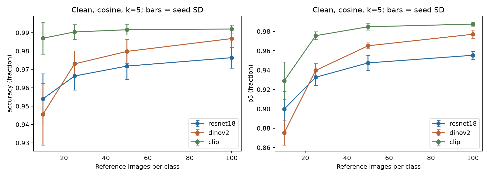
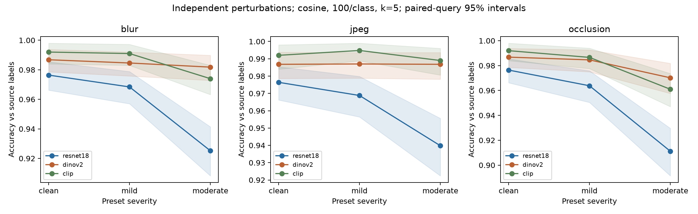
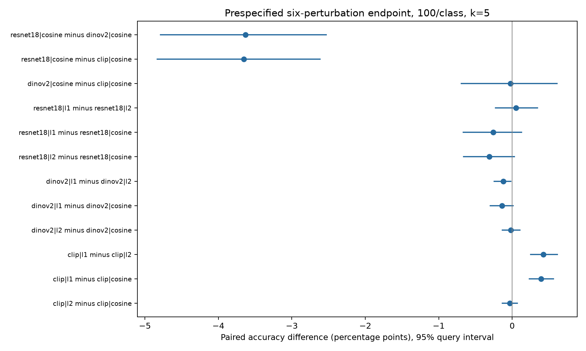
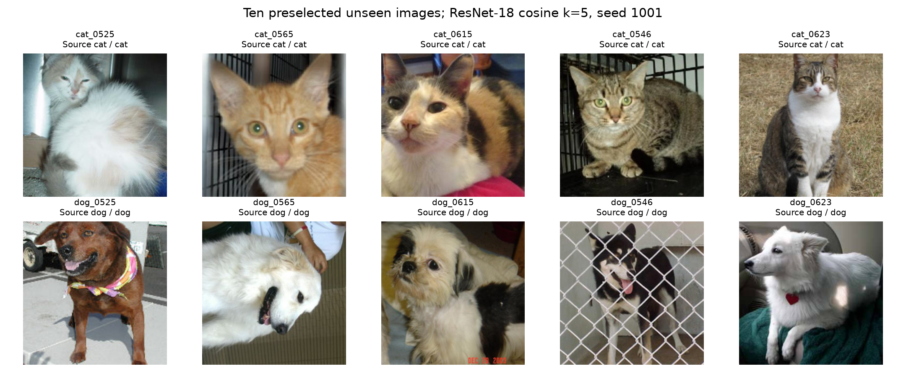
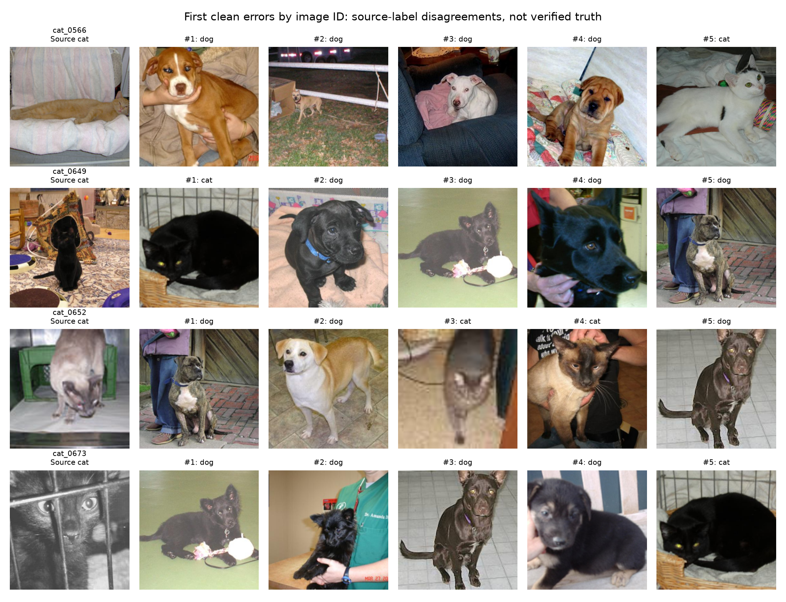

Loading locked experiment…
Reference size and perturbations
Clean images may still be easy. Each blur, JPEG and occlusion track is independent; six nonclean variants share the same original queries. All primary predictions use k=5.

Sample-efficiency bars show seed SD. At 10 images per class, P@5 covers a quarter of the library; interpret retrieval comparisons within the same reference size.


| Comparison A minus B | Difference pp | 95% paired CI pp | Holm p |
|---|
Endpoint: six nonclean conditions averaged equally, then ten reference draws. Holm is applied separately to 3 model and 9 distance comparisons. Confidence intervals condition on these reference draws. Source-label bias remains.
All prespecified metric records
| Configuration | Accuracy | 95% query CI | Seed SD | Macro-F1 | P@5 |
|---|
Inspect the neighbours
This explorer uses 100 references per class, seed 1001. Its initial ResNet/cosine setting is pedagogical, not a validation-selected champion. Full reported metrics average all ten seeds.
Controls update the query, rankings, distances and votes immediately. Changing k changes the voting set, not the five-image retrieval lists. The predicted class can remain the same. The summary plots above show the fixed experiment.
Labels are supplied by the dataset and have not been verified by a human. Majority vote is not a calibrated probability. Interactive k changes do not alter the prespecified results.
Actual k voting neighbours
Five nearest original feature-space distances
Five farthest
Pairwise Grad-CAM
Original encoder crop beside each overlay. Dark → yellow = low → high positive contribution within that map; a wholly dark map has no positive activation. Crops match the model processor, so they can differ from the gallery thumbnail. Maps are precomputed on GPU for every ResNet query, condition and distance.
Independent UMAP panels
Fitted on the 200 seed-1001 references, then transforms 500 clean queries. Blue: source cat; orange: source dog. Circle: reference; star: query. Click a query point to inspect it; an outlined ring locates the selected query in all three panels. The maps always show clean embeddings, even when retrieval uses a perturbed query.
Select a star-shaped query to update retrieval above.
What this particular projection shows
ResNet-18: cats concentrate toward the lower left and dogs toward the upper right. A transitional region around the middle contains points from both source classes, consistent with some less clearly separated neighbourhoods.
DINOv2: most cats lie in the upper-left region and dogs in the lower-right region, with a small number of points between or across the two regions. Broad separation coexists with residual ambiguity.
CLIP: the cat group appears on the right and the dog group on the left, with a larger empty gap in this fit. That gap is a property of the projection, not a calibrated classification margin or proof of superior robustness.
How to interpret it: reference circles and query stars occupy broadly similar class regions, suggesting transfer to held-out images within this source. Each panel has its own unitless coordinates; direction, gap and shape are not comparable across encoders. UMAP distorts geometry and depends on its settings. KNN uses the original high-dimensional embeddings. The actual cosine stress endpoint does not clearly distinguish DINOv2 from CLIP (Holm p=0.9566), despite their different-looking maps.
Unseen examples and errors

These ten images were selected by seed 42003 before inference. Aggregate evaluation uses all 500 queries.

Examples are selected by image ID, not for visual drama. A disagreement can reflect a model error, a source-label error, ambiguous content or missing evidence.
Inspect a displayed case with Grad-CAM
This case viewer uses clean ResNet-18 / cosine / k=5, matching the montages. Choose any of the ten preselected examples or four displayed errors, then choose one of its five neighbours. These controls are independent of the main explorer.
Each overlay shows positive evidence for similarity to that specific neighbour. It does not establish why the whole KNN vote is wrong, verify the source label, or prove that an apparent background cue caused the result.
What the audit can establish
Automatic decoding, file/pixel hashes, conservative pHash groups and ORB checks reduce detectable data issues. They do not guarantee complete deduplication or correct labels. An independent EfficientNet-B0 only flags source-label disagreements; no flagged image is removed or relabelled.
PetImages may overlap pretraining corpora. “Unseen” means outside this experiment's reference library and pilot. Synthetic perturbations do not establish real-world robustness. No human recognizability check was possible.
Frozen protocol:
500-image test lock:
Three models: ResNet-18, DINOv2-S/14 and CLIP-B/32. ResNet-50 remains future work. Runtime costs and CPU/GPU speed ratios are not compared.